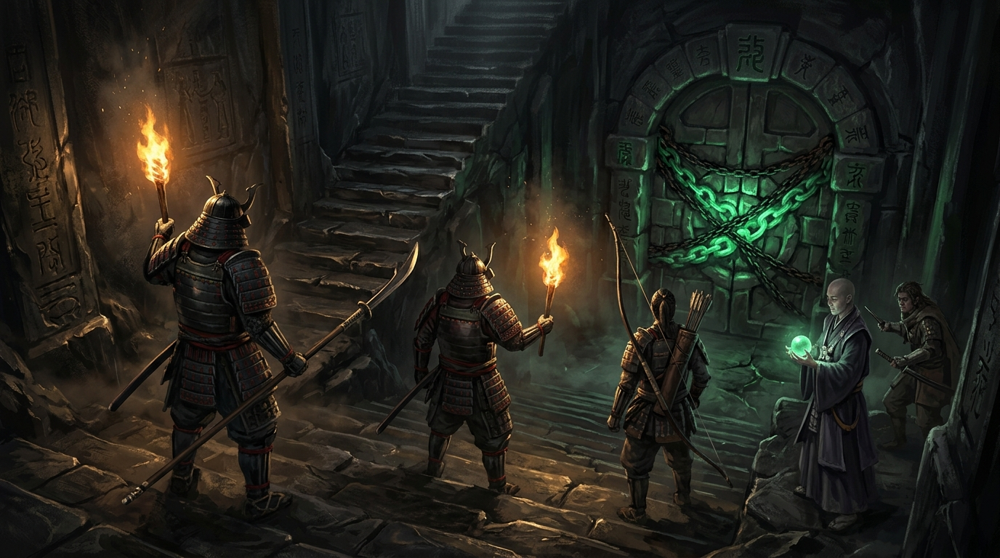
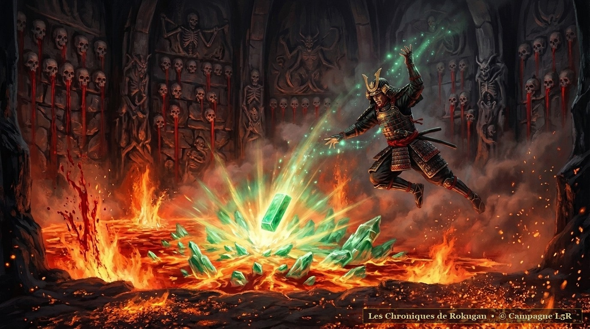
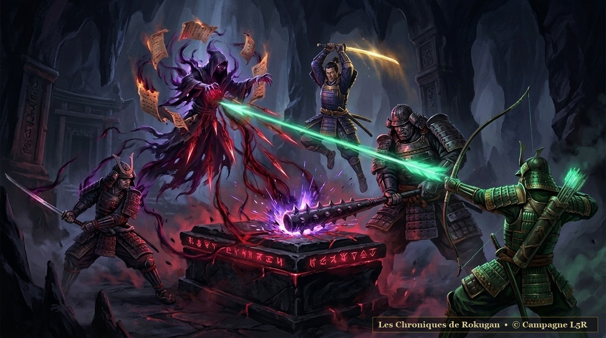

par Akira Tsuruchi, avec la participation d’Okado, de HiroHito et de Ryujin
L’histoire de Iuchiban est sombre. Ce Shugenja crabe a cherché à déjouer la mort en utilisant des techniques interdites venant de l’outre-monde. Après avoir réussi à ressusciter un samouraï, il créa sa propre secte, les adeptes du sang, pour recruter des Shugenja récupérer des cadavres et monter sa propre armée pour prendre le contrôle de l’empire des 7 émeraudes.
Après une grande bataille, la secte est annihilée. Iuchiban se fait enfermer dans une tombe secrète. Pour brouiller les pistes et afin que personne ne la retrouve, 4 autres tombes identiques sont également cachées dans l’empire. Pendant ce temps, Yajinden, son ancien bras droit, continue à recruter des adeptes de sang dans tout Rokugan et cherche sans relâche les tombes.
Ryujin a fini son combat. De nouveaux samurais arrivent dans la salle, ils meurent rapidement sous nos attaques et tous tombent en poussière noir et fétide à leur mort. La puissance de notre groupe est phénoménale, nous poursuivons notre avancée dans le tombeau. Mais nous sentons en revanche que Yuriko faiblit d’heure en heure. Iuchiban tente de pénétrer constamment son esprit et sape peu à peu son énergie. Nous devons nous dépêcher. A la fin du combat, elle reprend ses esprits et sort une perle de jade parfaitement sphérique de la taille d’un œuf de caille. Elle nous explique que cet artefact magique nous permettra de nous téléporter en dehors de la tombe si elle venait à mourir. Le mot d’activation est gravé dans le fermoir. Pour qu’elle récupère des forces nous restons un peu pour méditer.
La méditation achevée, nous prenons les escaliers qui descendent. Hiro-Hito ouvre la marche suivie de Ryujin, de Akira, de Yuriko et Okado ferme la marche et nous nous enfonçons dans un couloir d’une noirceur absolu avec de simples torche pour écarter les ténèbres. Plus nous descendons et plus l’air change. Il n’est plus seulement froid mais il est également épais. Il est chargé d’une électricité statique qui fait dresser les poils de nos bras.

Au pied de l’escalier se trouve une porte massive scellée par de lourdes chaines de jade. Hiro-Hito pose ses deux bras sur la porte pour la pousser et un hurlement inhumain insupportable déchire le silence de la crypte la porte massive bascule vers l’intérieur.
Nous entrons dans la première salle de la crypte. La pièce ressemble à une caverne avec des stalactites et stalagmites et en son centre, un vaste étendu d’eau noir stagne dans une dépression creuser dans la formation minérale. Tout autour de ce lac d’eau noir se trouve 4 portes en bois qui ne sont adossés à aucun mur. Au fur et à mesure que nous pénétrons dans la pièce chacun de nous est pris de haut-le-cœur à cause d’une odeur fétide insoutenable. Des gouttes noires et visqueuses tombent au compte-goutte du plafond pour alimenter le bassin. Alors que nous commençons à étudier la salle et ses portes étranges, une créature démonique émerge du centre du bassin et s’adresse à nous d’une voie lugubre « la voie de l’honneur est couverte de sang » puis il disparait dans le bassin qui se met alors à déborder et à remplir la pièce. On ouvre les portes mais rien ne se dessine derrière, Okado franchit le seuil et nous nous retrouvons tous téléportés dans une nouvelle pièce. Yuriko panique en essayant d’enlever le sang de ses pieds mais rien n’y fait. Même constat sur nos chausses et pantalons, impossible de nettoyer ce sang immonde.
Après quelques pas dans cette seconde pièce, le sol se met à trembler de manière régulière comme nous marchions sur un organe qui se contracte. Les murs son translucides et sont parcourues de veines noires où circule un liquide visqueux. Au centre de la salle, nous apercevons une cage suspendue dans laquelle se trouve un cœur en décomposition grand comme un homme qui bat avec un bruit sourd et répugnant. Plus j’observe ce cœur plus je pense qu’il fait partie intégrante de ce tombeau. Je sens que je dois chercher à comprendre son rythme et sa signification. Au fur et à mesure que le temps passe nous sentons que la pièce se resserre autour de nous. En cherchant une porte au travers des murs translucides tout autour de la pièce, nous apercevons des barres de jades et de Crystal fixé au mur juste derrière. Ryujin tranche la paroi avec son sabre et se saisit d’une barre de jade et une autre de Crystal. En les enlevant du mur, il grimace car les barres lui ont brûlé les doigts. Hiro-Hito, qui a trouvé une autre porte derrière la fine peau translucide nous appelle. Alors que nous apprêtons à sortir, nous entendons une voix ténébreuse raisonner dans la pièce : « Je vais disperser vos énergies élémentaires après vous avoir brisé tous les membres être de chair. Je vais vous montrer les pires horreurs que vous ne pouvez même pas imaginer ! » Yuriko nous regarde apeurée et murmure dans un souffle « c’est Iuchiban … ».
Une odeur de fer chaud et de chair brûlée nous accueille dans la troisième pièce. C’est un couloir de plusieurs dizaines de mètre. Les murs de bronze poli ne reflètent pas mon visage mais je peux entrevoir des scènes de mon passé, des moments que j’aurai voulu oubliés comme cette fois où, enfant, je m’étais fait dépouiller par ces brutes dans la rue. Soudain une porte apparait au centre de la pièce et nous sortons.
Nous rentrons maintenant dans une immense arène de pierre noir où l’air lui-même semble en flamme, le sol est nappé de cendre chaude où s’élève de petites flammèches crépitantes. Les murs sont recouverts de crâne humain incandescent et dont les orbites vides laissent couler des larmes de sang. Au centre de la pièce, se trouve une énorme faille béante où jailli de manière sporadique des geysers de sang bouillant laissant des traces écarlates sur les bloques de pierre. Dans ce spectacle de pure désolation, cet aperçu de l’enfer, je sens que Yuriko commence à avoir de plus en plus de mal à maitriser sa trance. Elle marche droit vers la faille de feu où derrière se dessine la seule issue de la pièce. Ses pieds écrasent les tas de cendres ardentes et les flammèches sans s’arrêter. Pour sortir nous devons la suivre et traverser ou contourner ce puit de feu et de sang. Soudain poussant un hurlement je vois Ruyjin qui empoigne la barre de jade qu’il possédait et la jette centre au centre du puits. Dès que le morceau de jade rentre en contact dans le sang il se dissout instantanément et une détonation sourde et magique secoue les fondations de la pièce tel une onde de choc de pureté divine. A la place du geyser une croute verdâtre de jade se forme et commence à recouvrir toute la faille à une vitesse fulgurante. Nous pouvons donc traverser jusqu’à la sortie.

Nous nous retrouvons dans la pièce avec les murs translucide. Grâce à l’action précédente de Ryujin, je suis convaincu que nous allons avoir besoin de jade et de Crystal pour la suite de notre périple. Malgré la douleur subit en décochant les barre de jade et de Crystal des murs, je décide prendre une barre de chaque persuadé qu’elles seront notre salue devant Iuchiban. Je sais que le jade représente le sang de la terre et que c’est l’arme absolu contre la souillure. Le cristal est lié à l’ordre céleste et à la lumière divine. Il est à la fois plus rare et plus difficile à utiliser que le jade. Les deux matières peuvent blesser les créatures de l’outre-monde mais contrairement au jade, le cristal ne se dégrade pas. Seul les kuni et le clan du dragon ont les techniques nécessaires pour maitriser son extraction. Nous prenons un peu de repos avant de reprendre la route vers une nouvelle salle.
Dès que nous foulons les dalles de ce nouveau sanctuaire, le silence nous oppresse les tympans. Devant nous Yoriko ne marche plus, elle glisse ses pieds ne touchent plus le sol, elle se tourne vers vous et le visage de la jeune femme est défiguré par un rictus de triomphe qui ne lui appartient pas. A travers sa bouche, c’est une voix masculine et terrifiante qui s’exprime : « le sang a coulé, le jade a été brisé et vos esprits sont à nus ! merci samurai de l’empire, sans votre force, je n’aurais jamais pu franchir les défenses de mon maître ! » Yuriko poursuit sa transe vers ce qui semble être le tombeau de Iuchiban. Je me jette sur Yuriko avec mes barres de cristal empoigne Yuriko pour qu’elle n’arrive pas jusqu’au cercueil au centre de la pièce. Mais je ne parviens pas à l’arrêter, j’ai le souffle court et je dois mettre un genou au sol. Ryujin s’élance à ma suite, récupère la barre de cristal au centre et essaie également d’arrêter Yuriko mais comme moi, il échoue et se retrouve au sol. Juste avant d’atteindre le cercueil, Okado tente également sa chance et se jette sur elle mais est également repoussé par une force mystérieuse. Dans un geste de désespoir, Hiro-Hito se lance en hurlant sur Yuriko et percute son flanc juste avant qu’elle ne pose la main sur le cercueil. Yuriko est projeté sur les dalles d’obsidienne à plus de 3 mètres et Hiro-Hito s’effondre dans un vacarme d’armure devant le cercueil. Nous voyons tous maintenant une brume noire vaporeuse et désincarnée. Nous allons devoir affronter le bras droit de Iuchiban qui protège depuis des décennies le cercueil de son maitre. Yajinden émet un sifflement de rage car il a été privé de son réceptacle. Je décoche une flèche de jade visant la forme éthérée. Celle-ci passe au travers mais le monstre émet un râle macabre. Puis c’est au tour de Ryujin de s’élancer contre le fantôme, son sabre traverse la silhouette dans un flash aveuglant, l’ombre pousse cette fois-ci un hurlement strident et on voit son ombre qui s’effiloche sous la violence du coup. Mais le spectre tente tant bien que mal de se fixer dans le monde matériel. Les runes de son sarcophage se mettent à briller d’un éclat écarlate. Nous voyons le spectre aspirer la souillure de la pièce pour refermer ses blessures vaporeuses. Il braque sur nous son regard chargé d’une haine mortel. Des parchemins profanes collés sur son corps s’enflamment d’une lueur violette et d’un geste spectral il pointe notre groupe du doigt. « Vous avez osé frapper l’esprit du maitre ! ». Tout le sang présent dans la salle se met à glisser vers le sarcophage et à s’agglomérer dans les airs pour former des aiguilles de glace rouge. Elles fondent sur Ryujin et se plante dans son corps, la brume noire qui les accompagne lui enserre la gorge et la poitrine. Ses yeux commencent à se révulser et l’ombre de Iuchiban se rapproche pour prendre possession de son corps. Okado tente de le secourir en attaquant de front l’ombre en poussant un rugissement qui fait trembler toute la crypte. Il bondit sur l’estrade le katana levé à deux mains au-dessus de sa tête. L’ombre de Yajinden ne le voit pas venir, la lame s’abat dans un tremblement strident et tranche la silhouette de part en part. Le cri de douleur inhumain strident à la limite du supportable s’échappe de la gorge vaporeuse de Yajinden. L’énergie noire qu’il avait aspirer dans le sarcophage s’échappe d’un coup de sa blessure en fumée violette. Sa silhouette s’amincie d’un coup et est repoussé en arrière vers son cercueil. Hiro-Hito l’achève d’un énorme coup de tetsubo écrasant à la fois le spectre agonisant et le sarcophage. L’ombre de Yajinden éclate dans un jet d’étincelles violettes et disparait. Les derniers parchemins profanes sur le sarcophage se consument et nous entendons dans un bruit métallique les sceaux se verrouillant et un silence glacial retombe d’un coup sur la pièce.

Je vais vers Yuriko pour essayer de la soulager de ses blessures. Elle se redresse péniblement et nous explique que nous avons réussi à stopper un rituel visant à faire revivre Iuchiban en purgeant Yajinden de la pièce. Le cercueil de Iuchiban est maintenant de nouveau correctement scellé. Elle nous remercie de l’avoir sauvé de Yajinden et s’incline profondément jusqu’à toucher le sol dans un geste de gratitude qu’absolument aucun protocole d’école n’aurait pu lui dicter.
Nous reprenons tous notre souffle et regardons s’il n’y a rien dans la pièce avant de repartir.
Okado récupère un parchemin qui associe des noms de samurai renommé avec des sommes d’argent. Nous en déduisons qu’il s’agir là probablement des samurais qui financent le culte de Iuchiban. En récupérant ma flèche de jade qui s’était plantée dans le mur au début du combat, je me rends compte que sa pointe est devenue un cristal vert translucide et brillant. Je la mets avec les autres dans mon carquois pour l’analyser plus tard. Nous prenons l’artefact de Yuriko et nous nous téléportons tous à Kyuden Hida.
En un instant nous nous retrouvons de nouveau dans la plus grande forteresse de Rokugan. Les odeurs réconfortantes de la fumée de bois, du fer forgé et de la viande grillée remplacent instantanément la puanteur de Iuchiban. Un cri d’alerte retenti et une douzaine de sentinelle du clan du crabe nous encercle. Mais en reconnaissant les visages familiers de Hiro-Hito et Okado, l’atmosphère se détend laissant place à une profonde stupéfaction.